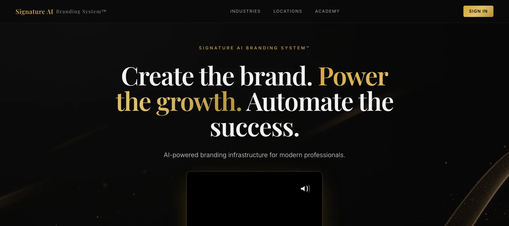
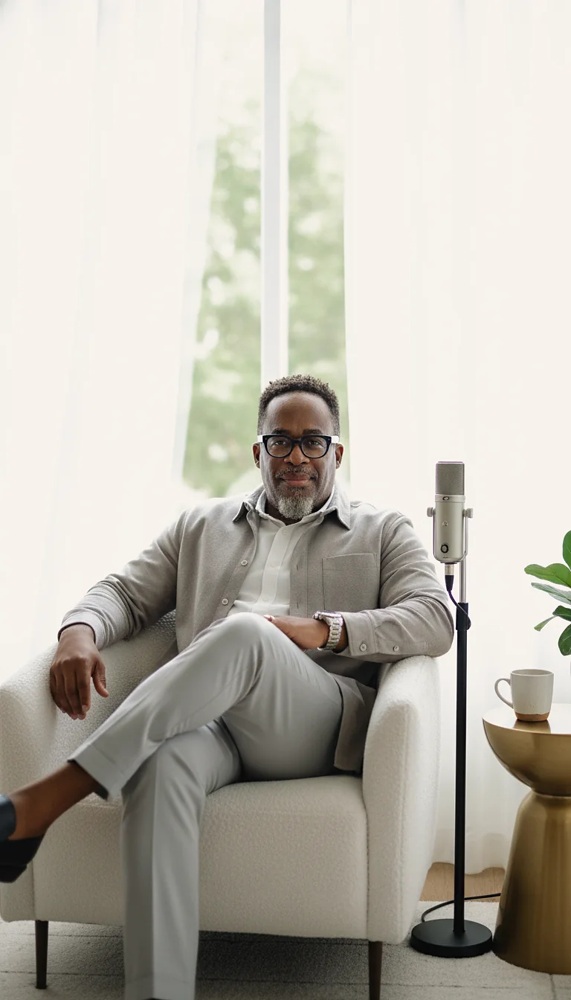
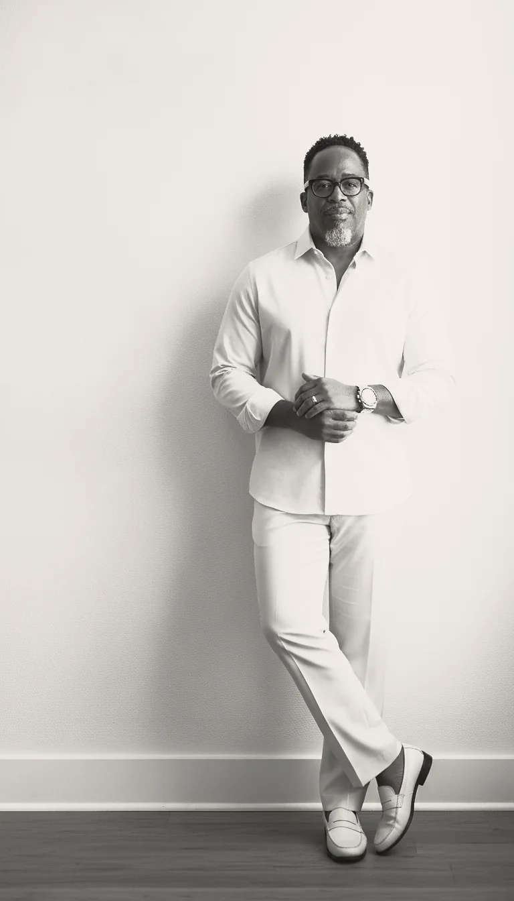
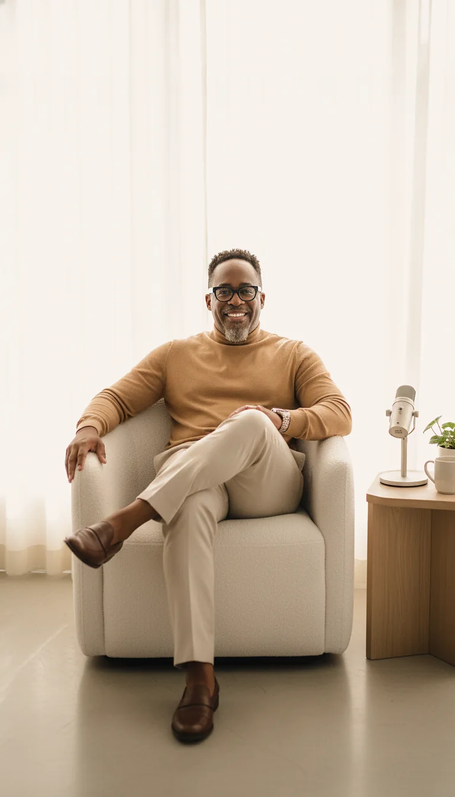

The trilemma
Consistency, creativity, budget. Most owners get told to pick two. So the brand stalls, and they blame themselves for it.
Your voice, heard.
Your systems, automated.
Your vision, realized.
You’ve found where it all comes into focus.
Kenneth Lamor
Here’s what I noticed, shoot after shoot, for twenty years. People walked out of my studio with beautiful images and no idea what to do with them.
The photos were fine. The brand underneath them was a fog. Same pattern, every single time. That pattern is the work.
Consistency, creativity, budget. Most owners get told to pick two. So the brand stalls, and they blame themselves for it.
A brand kit nobody deploys is an expensive screensaver. The space between having assets and using them is where most brands quietly die.
Most agencies sell you work. The work isn’t yours. Owning your brand should mean something you can actually hold.
I stopped trying to be consistent. I built a system that’s consistent for me. Willpower runs out by March. Systems don’t.
None of this is a mystery. It’s mechanics. And mechanics can be taught.
Every engagement starts the same way. A two-minute Brand Assessment tells me where your brand is today. Then we talk about where the business is going, and the gap between the two.
You know something’s off with your brand, but you can’t name it yet. We find the gap, call it plainly, and map what to build first.
Best for founders and executives at a turning point.
Authenticity meets AI. We start with the real you: real brand assets, a real strategy, your actual voice. Then AI and automation scale it on the platform I built, so your brand shows up every week without losing what made it yours.
Best for brands ready to scale without sounding like everybody else.
A strategist in your corner, month to month. Decisions get made faster when somebody at the table has already seen this movie.
Best for leaders whose brand has to keep pace with the business.
When the plan calls for execution, my company Signature Branding & Marketing builds it.
The method
AI can imitate anyone’s handwriting. It can’t produce your signature unless you give it your DNA.
Your story, your voice, your real image. We find what’s genuinely you and put it into words. Your brand starts from what’s true.
Then we turn it into real brand assets: photo, video and content you can use everywhere, a defined voice, and a brand kit you own, not one your agency keeps.
AI and automation, on the platform I built, carry it to every place your customers are. Consistent every week, without losing what makes it yours.
A brand people trust before they ever meet you. That trust is what opens doors: new clients, bigger stages, better opportunities.
Start the first step on your own, free. No email, no catch. Get the Signature DNA Kit
Here’s what kept happening. I’d hand a client beautiful images and a solid plan, and then real life showed up. No time, no team, no budget to keep it going. The strategy was right. The follow-through was the problem.
So I stopped writing plans that run on willpower and built the platform that runs them. I run my own brand on it.
It starts with real headshots, shot in person. Those images power the AI, which builds branded imagery in styles made for your industry, from consulting and legal to faith leaders and speakers.
Strategic profiling captures your authority, your communication style and your brand personality, so every AI output sounds like you.
Live Loop™ turns your brand assets and voice into an engine that builds your authority every week. Deliverables live in one client vault, and real people manage the system behind it.

The Signature AI Branding System, live at signaturebranding.app.
Twenty years across the table from business owners gave me the stories. Building every layer of my company by hand gave me the receipts. On stage I slow it all the way down, so your audience walks out with mechanics they can use Monday morning.
AI with context versus AI without it. Why most AI content sounds like nobody, and how to fix it at the source.
Why beautiful brand assets sit unused, and the simple systems that put them to work.
System over hustle. How I built a company one layer at a time, and what each layer made possible.
Know the value of what you know, or get shortchanged at the exchange. The thesis behind my forthcoming book.

Forthcoming
Creating a Cycle of Prosperity in Your Life
Most of us were taught that having ideas is the same as building them. It isn’t. Wisdom is a currency. You can spend it, invest it and earn it, and there’s a cycle that turns it into a life that’s free. I’m finishing the book now.
I’ll send one note the day the book is out.
People think I evolved into a brand strategist. The truth is, the full-service solution was always the goal. Photography was the access pass.
A photoshoot is intimate. You spend real time with someone, and you see who they are when the camera’s down. Twenty years and 7,000+ sessions later, I had a data set nobody else had: exactly what every business owner is actually missing.
So I built it, one layer at a time. A fifteen-minute headshot. A fast edit-and-return workflow. A three-day event system that can open a new city on demand. A team. Automations. Then AI tied it all together into one platform, signaturebranding.app. None of it was a leap. Every layer earned the next one.
That’s Signature Branding & Marketing. And it’s why I can sit across from you and talk about your brand with receipts instead of theory.
“I built the AI branding system I actually wanted my clients to have.”

Start with the Brand Assessment. Two minutes to tell me where your brand is today, messy version included. Then we find a time to talk.
Opens in a new tab. You’ll pick a time to talk at the end.

Keynotes, workshops, podcasts and firesides. Tell me about the room and I’ll take it from there.
Your speaking inquiry is in. I’ll read it personally and reply with next steps.